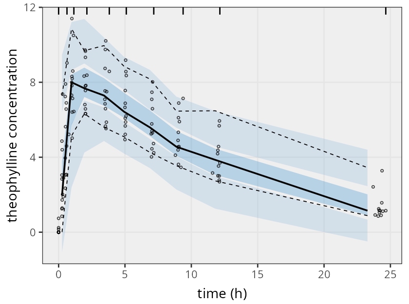
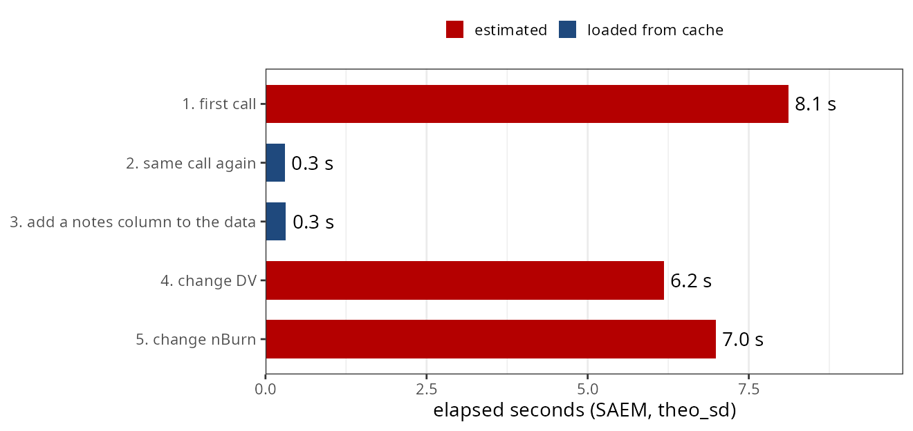

nlmixr2save: fits you can read, runs you don’t repeat
Matthew Fidler
On behalf of the nlmixr2 team · ACoP 2026 poster
<- to := and a model runs only when something changed
fit <- nlmixr2(one.cmt, theo_sd,
est = "focei")
saveFit(fit) # fit.zip
fit2 <- loadFit("fit")install.packages("nlmixr2save")
fit2 <- loadFit("fit")
vpcPlot(fit2)
fit3 <- fit2 |>
model(ka <- exp(tka)) |>
nlmixr2(est = "focei")nlmixr2est or rxode2 versions differ
<- to := and a model runs only when something changedfit <- nlmixr2(one.cmt, theo_sd, est = "saem") # runs every time
fit := nlmixr2(one.cmt, theo_sd, est = "saem") # runs once, then loads fit.zip
:= works on any function, and simulations restore the random seedset.seed(42)
sim := rxSolve(fit, nStud = 10)
# 1st source: simulates
# re-source: loads sim.rds.rds with the hashsaveFitRandom("mySimulate")| option | default | what it does |
|---|---|---|
nlmixr2save.dir |
"." |
directory for cache files |
nlmixr2save.prefix |
"" |
prefix for file names, e.g. one per report |
nlmixr2save.check |
TRUE |
FALSE trusts an existing cache; runs only when it is missing |
nlmixr2save.data |
TRUE |
FALSE leaves the original data out of saved fits |
nlmixr2save.checkVersion |
TRUE |
warn, or ask, when a cache came from other package versions |
nlmixr2saveInvalidate() deletes every file in the directory that starts with the prefix
Interactive
The cached fit was run with
nlmixr2est 7.0.2 (installed 7.1.0).
1: Reload the cached fit as-is
2: Rerun the fit with the installed packagesScripts, rendering
Warning: the cached fit was run with
nlmixr2est 7.0.2 (installed 7.1.0);
loading the cached fitloadFit() has no call to rerun, so it warns
fit-noData.zip |
fit-noData-noFit.zip |
|
|---|---|---|
| model, estimates, objective function, omega | kept | kept |
| eta table, parameter history | kept | kept |
| per-observation predictions and residuals | kept | removed |
| original dataset | removed | removed |
nlmixr2saveShare("fit") # fit-noData.zip
nlmixr2saveShare("fit", noFit = TRUE) # fit-noData-noFit.zipsaveFit() / loadFit(): R source and CSV that stay readablefit := nlmixr2(...): rerun only when something changedSection illustrations are Gemini Nano Banana-generated artwork
nlmixr2 development team